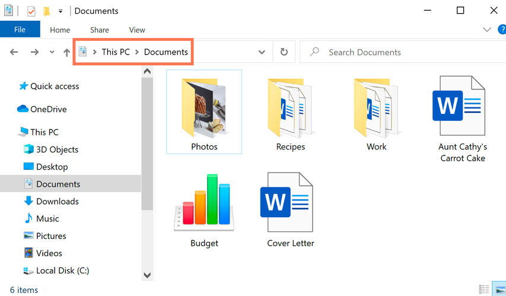

Chapter 0: Python Overview and Installation
Section 0.1: Introduction
Welcome to Python Programming! This comprehensive guide offers a full introduction to software development in Python. For reference, this is an HTML document (with CSS and JS) that is structured from a programmer's perspective. The first couple chapters are pivotal for anyone programming in Python, but the latter chapters continue on with the theory side of computer science.
If this is your first time programming, Python is a fantastic choice. It is very easy to read compared to Java and C++. It is widely used as well, specifically by big tech comapnies such as Instagram and Facebook.
Section 0.2: Installing Python
If you do not have Python already installed, please read this section. Otherwise, you can move onto the next section, Running Your First Program.
To install Python, you'll need two things:
- Python (duh)
- An Integrated development environment (IDE)
Installing Python is quite simple, go to this link and follow the setup wizard to install Python.
To setup an IDE, you first must choose an IDE. An IDE is like an online notebook where you write code and run code. There are many options to choose from, but I personally suggest VSCode. You can download and setup VSCode here.
Section 0.3: Running Your First Program
To check if Python is successfully installed, open up your command terminal and type "python". If a version number appears in your command line, Python is succesfully installed and you are ready to run your first program.
The first program we will run is the "Hello World" program, which displays Hello World on your terminal. Luckily in Python, this program is very short and is only one line.
print("Hello World")
Pretty simple? Run the program on your IDE and you should see:
Hello World
And that's it! You have run your first program! Give yourself a pat on the back. You may have notice that anything we put inside the parenthesis gets print to the terminal. These are known as print statements. Try writing your own print statements.
print("Python")
Use practice sections within the chapters to enhance your understanding of the concepts. They are built so you get practice writing the syntax and understanding what each statement does. All practice boxes have answers attached when you click the box.
Chapter 1: Becoming a Programmer
Section 1.1: Introduction to Programming
Every time we interact with a computer, we are interacting with someone's code (usually). It might not seem like it, but we take many things for granted. From banking to YouTube, everything has been automated to be as efficient as possible. All of our everyday convenience in technology has likely been the result of countless software designs today.
THINK:
What's a piece of technology that you use every day that likely has code in it?
Section 1.1.1 What Goes In Must Come Out
When programming, you often want to narrow your programs into a simple input-output process. That is your program should take in a problem and output a solution. The black box , that is what happens in between input and output is up to you to program, but the final product should not worry about it.

Section 1.2 Design Time, Compile Time, Execute Time
As a programmer, we are usually tasked with a problem and have to develop a solution to it. At a high-level, we can break down our problems in software development into three stages:
- Design Time
- Compile Time
- Execution Time
Section 1.2.1 Design Time
For example, let's say we work for NASA and we want to (hypothetically) travel to Mars. We've identified our problem, and the answer might seem obvious (rocket ship). But design time is not just coming up with a solution. It's coming up with implementations (aka HOW are we building the rocket ship). Design time is breaking down our big problems into smaller (and more manageable) problems. This could be answering the mini-questions:
- How big of a rocket do we need?
- How much oxygen do we need?
- How much food do we need?

When it comes to software development, you'll want to spend 70-90% of the time designing. While it might seem like overkill, the more time you spend planning, the less time you'll have to spend coding and fixing your code. Because every time your code breaks, you'll be back at design time.
Section 1.2.2 Compile Time
This is basically the "coding time". But what does compiling mean? To understand compiling, let's pretend instead of talking to a computer, you are talking to the newest foreign exchange student. His English is not great, so it's difficult to get through to him. But your best friend speaks his language, so he's able to communicate with you and translate your English. That's what your programming language does. It's a way for the computer to understand our human ideas. When you compile your code, it's essentially translating it into binary, or a language your computer is fluent in.
Compile time should be easy if you did a good job in design time. Otherwise, you'll be doing design time and compile time at the same time, and you'll work extra slowly. This should only be about 25% of the time spent in the development process.
Section 1.2.3 Execution Time
Finally, after you have designed your implementations and code, you are ready to run your code. Now, two things can happen here:
- Your code works as expected and you are finished
- Your code breaks unexpectedly (more common occurrence)
If your code breaks, there are usually two types of errors you can run into
This usually means you misspelled a variable name or made a typo somewhere. These are usually easy to fix as Python IDEs will tell you where the error is. Syntax is a fancy word for how we spell things.
These are more common and harder to fix. This usually means your code does not do what it's supposed to do. This might be where you write a program to detect whether a number is odd or even, and your program outputs odd for even numbers.
Section 1.3 Unit Testing and Debugging
Now how do you know when you are done? Your code needs to go through rigorous testing to ensure it does what you expect it to do. This comes in the form of unit testing or test cases. Unit tests are portions of code to systematically measure the outputs of your code. We will explore unit tests in further detail when we begin writing more complex programs.
But let's explore the concept of debugging. Likely, you won't write perfect code the first time and you'l have to revisit steps 1-3 in design, compile, and execute time. Debugging is the concept of seeing what you outputed and rethinking adn rewriting code in order to get the program to work correctly.
Chapter 2: Numbers and Variables
Section 2.1: Introduction to Numbers in Programming
Computers and numbers are like peanut butter and jelly. They go together, but why? What makes computers superior to humans is the ability to calculate and manage numbers easily. Imagine processing 1024 * 546 in your head. By the time, you probably even register the thought in oyur head, a Python program could have easily displayed the answer.
Let's revisit our trusted print statements and try printing some numbers. You can try simply:
print(1)
Which should show on your terminal
1
Section 2.2 Simple Math with Python
Python offers many simple math operations to perform. It offers the standard four operators in math:
- Addition: +
- Subtraction: -
- Multiplication: *
- Division: /
Python also offers the modulo operator (%) , which is similiar to calcualting the remainder of two numbers. For example 7 % 3 = 1.
Simply, if we want to print any simple math between two numbers, we can simply do:
print(2+2)
Which outputs...
4
Going back to the large multiplication example earlier, you can input the same numbers...
print(1024 * 546)
But with resounding speed, you'll get
//I imported a library that calculates the speed of a program
559104
Elapsed Time: 0.0 seconds
Now you see why programming with numbers is amazing. You can perform specific tasks with incredible speed.
Practice
Write a program that prints the sum of 63, 74, and 23
print(63+74+23)
Intially, Python supports PEMDAS and order of operations automatically. You can use parenthesis to prioritize operations first.
Section 2.3 Advanced Math and Variables
Another mathematical concept that is in programming is variables, commonly taught in a high school algebra course. However, variables in algebra are different than variables in programming. In programming, variables act a container that can hold a value. It's best if we see an example.
x = 6
In the code snippet above, you have created a container with the label "x" that is holding the value of 6. Variables can be called whatever you want (i.e num1, number, potato), as long it is not a keyword in python (i.e for, in, break).
If you want to print out whatever is inside the container using print statements, you can simply write:
print(x)
Note, in this case you omit the quotation marks. If you are printing with quotation marks, you'll print whatever is in between the quotation marks, which is known as a string. Printing just x, will output:
6
What if we needed to change the value within our container? In computer language, what if we needed to change the variable value? That is a simple fix:
Example 2.3.0
x = 6
print(x)
x = 5
Section 2.3.1 Reading Programs
As we start to read longer programs, it is essential to understand how programs run. Let's take Example 2.3.0 as a simple example. Programs read from the 1st line, then 2nd, and so on so forth.
The start of the program occurs at line 1 (this might not always be the case, but most programs for now will start at line 1). At the start of the program, we create a variable "x" and assign it the value of 6. Then we move on to line 2, and we ask the program to print the value assigned to x. At line 2, or the state of the program at line 2, x is assigned the value 6, so it prints out 6.
At line 3, we assign a new value to x. We do not destroy and recreate the variable, but instead we reassign a new value to x. A variable CANNOT hold two values at once.
Practice
Using x, write a program that prints 6, then 5
x = 6
print(x)
x = 5
//when you print x this time, x has the value 5
print(x)
Section 2.4 Handling Multiple Variables
Now consider this code:
x = 6
y = 8
We have TWO boxes now. But what if we wanted to put the value in y into x? Essentially, we want to put 8 into x. Granted we could do the same way we did in the previous example, but what if we did not know y equals 8? What if y was also changing throughout the program?
To make x have the same value as y, we say:
x = y
Printing x now will yield:
8
PRACTICE
If we printed y, what is printed?
8
Section 2.5 Putting Everything Together
Now that we know how to handle multiple variables and operators, we can start combining them together, for example:
num1 = 10
num2 = 5
num3 = num1 + num2
print(num3)
Which yields:
15
Section 2.R Chapter 2 Review
Now that the document is covering actual content, I will put in review for each chapter and cover the big ideas from the chapter.
Section 2.2
Python offer five operators for numbers
- Addition: +
- Subtraction: -
- Multiplication: *
- Division: /
- Modulo: %
Section 2.3 & 2.4 & 2.5
Variables are containers to store values. They can have any name you give it , as long it is not a keyword in Python.
Variables can change values over time in a program like so:
x = 6
print(x)
x = 5
You can also have multiple variables running simultaneously such as:
x = 6
y = 8
As long as your variables are numbers, your standard operators will work on variables too.
Chapter 3: Topic 2
Your content goes here for Chapter 3...
Chapter 9: Inheritance and Polymorphism
Section 9.1 Inheritance of Classes
Now that you have learned what primitive and non-primitive types are, you'll soon realize almost everything is non-primitive. As you create your own objects, you'll might find yourself running into this problem.
Suppose we have a person class:
class Person():
def __init__(self, name, age):
self.name = name
self.age = age
#could have other things like birthday, hair color etc.
And suppose you are creating a school database server (i.e a place to manage students and staff). Then
it would be helpful to make individual class for each type of person (i.e student
, teacher, principal, etc.)
Now, whether you are student, teacher, principal or whoever you are, you have the share aspects
as a Person, that is you have a name, age, birthday. So, it would
seem kind of annoying to have give each student, teacher, principal, a name and age each type you declare it.
After all, our goal in programming is to reuse as much code as possible.
This is where the idea of Inheritance comes into play. Inheritance allows us to write generic classes that other classes can inherit its variables from. So instead of writing:
class Student():
def __init__(self, name, age, grade):
self.name = name
self.age = age
self.grade = grade
class Teacher():
def __init__(self, name, age, salary):
self.name = name
self.age = age
self.salary = salary
self.courses_teaching = []
class Principal():
def __init__(self, name, age, salary,title):
self.name = name
self.age = age
self.salary = salary
self.title = title
We can create a generic (parent) class that another class (child) can inherit from. Additionally, child classes can inherit methods as well. The next section will cover how to create parent and child classes.
Section 9.2 Writing Our Own Parent and Child Classes
Parent classes are not any different than the regular classes you have been writing in chapter 8.
In the case of a generic Person class, you can simply write:
class Person():
def __init__(self, name, age):
self.name = name
self.age = age
#could have other things like birthday, hair color etc.
#let's add a method to show inheritance of methods as well
def get_name(this):
return this.name
Now let's say we want to create a Student class now that
inherits the variables and methods from Person. To make a class inherit from
another, you write:
class Student(Person):
Now, to create an instance of a Student, we need an __init__()
method. This is no different than a regular class (and you should treat these as regular classes). But what if we want to use the same constructor
as our parent class? To do so, we call the parent's constructor using the super() keyword like so:
class Student(Person):
def __init__(self, name, age, grade):
super().__init__(name, age)
#you can add on additional variables, but always call the parent constructor first if needed
self.grade = grade
#these two classes are the same
class Student():
def __init__(self, name, age, grade):
self.name = name
self.age = age
self.grade = grade
And now you can sucessfully create a new instance of Person and
Student like so
class Person():
def __init__(self, name, age):
self.name = name
self.age = age
class Student(Person):
def __init__(self, name, age, grade):
super().__init__(name, age)
#you can add on additional variables, but always call the parent constructor first if needed
self.grade = grade
Practice
Using the Person class, write a Teacher class
class Teacher(Person):
def __init__(self, name, age, salary):
super().__init__(name, age)
self.salary = salary
Chapter 11: Importing Files
Section 11.1 Introduction
An overarching goal of this document and programming in general is to reuse as much code as possible. Additionally, whenever you use libraries (i.e PIL and TKinter for GUIs), you are essentailly re-using someone else's code. Imagine if you had to re-type all the code in a library before using it.
Importing is usually used for importing Python libraries. Libraries are portions of code that someone else or you have written. Using libraries are useful as some libraries often have cool functions and require you to access low-level parts of your operating system. We won't dive into how these libraries work, but it is a good read if you are interested in low-level programming.
Section 11.2 Files and Directories
Before we can import libraries and other files, we have to understand what is a file first. Files are the individual programs on your computer. This could be scratchwork.py, word.txt, homework.pdf. Directories are the folders that can store multiple files. This could be your desktop, downloads, or homework folder you might have created.
Section 11.3 Importing Local Files
For now, we will only focus on local imports, that is importing a Python file that's in the same directory as another. Let's say we have a method in one file that generates a random password based on someone's email:
#call this program file1.py
def print_info(email):
password = ""
for i in email:
password += chr(ord(i) + 3)
return password
And let's say you were developing a bank platform and wanted to reuse this password generation method. In this case, everytime a new user is created, the bank.py creates a password the user
#call this program bank.py
class User():
def __init__(self, name, email, #could have more...):
self.name = name
#would be great to reuse password generator here!
self.password = ""
#any other relevant infomation needed
#rest of the program occurs here
To import methods or classes from other files, you'll need two keywords: from
and import
from: dictates which file you want to import fromimport: what specifically from the file you want to import
In the case of the bank and passwords, to import the method from file1.py to bank.py...
from file1 import password
class User():
def __init__(self, name, email, #could have more...):
self.name = name
#use password() like it was already written in the program!
self.password = password(email)
#any other relevant infomation needed
#rest of the program occurs here
This is useful when you want to reuse code you have already written, or want to stay organized when writing longer code. If you want to multiple import multiple methods or classes, you can separate them using commas...
from file1 import method1, method2
Or if you have a lot of methods or classes, you can use a *, which means import all
from file1 import *
Section 11.4 Importing Libraries
As mentioned earlier, libraries are pieces of code written by other people. Most of these libraries do not exist on your computer intially, and you'll need to install the libraries on your system before using it. (Some libraries come pre-installed with the Python installation)
To install a library, you'll need to usually use pip install {insert whatever
library here} in your terminal. To check if a library is sucessfully installed on your system, try
and find the version of the library and print it to your terminal.
For example, let's practice by installing Tkinter, a popular Python library for building GUIs. To install Tkinter, go to your terminal and type in
pip install tk
Once Tkinter is installed, you can import it, using the same keywords as if it was a local file.
from tkinter import *
It's important to note that every library has a different installation process and import process. You should always consult the official library's website for proper installation.
Chapter 12: Exception Handling
Section 12.1: What Are Exceptions?
It is all too common to run into exceptions in coding. You may be familar with some basic types of exceptions, such as IndexError and ZeroDivisionError. These are what cause our programs to crash unexpectedly. Let's view some common exceptions you have probably run into while debugging.
ZeroDivisionError
Consider this code:
print(1/0)
Maybe from math class you know this as undefined. In fact, Python does not know what to do when this occurs. Thus, it raises the ZeroDivisionError.
IndexError
Consider this code
arr = [0,1,2,3]
for i in range(0,5,1):
print(arr[i])
This code prints out
0
1
2
3
Traceback (most recent call last):
File "error_sample.py", line 3, in module
print(arr[i])
~~~^^^
IndexError: list index out of range
This error is thrown when you try to access an array spot that does not exist.
Section 12.2 Expectating Exceptions
What a mouthful. We saw some common exceptions, but what if we wanted a specific exception for our program.
Practice Problems
This section contains additional practice questions that can help further your understanding of the material in the document. These are questions that should only take about 1-2 minutes to answer, and are formatted similar to the blue box practice questions you might see in the text.
Chapter 2 Practice Problems
PRACTICE 2.2
What is happens when this program is ran?
print((10 + 12) * 3)
66
PRACTICE 2.3
What is happens when this program is ran?
x = 6
x = x + 3
print(x)
9
PRACTICE 2.4
What is happens when this program is ran?
num1 = 7
num2 = num1
num1 = 5
num1 = num2
print(num1 + num2)
14
Exercises
These are excercise to help develop problem-solving and coding skills. These should take at least 5 minutes to do.
Chapter 4 Exercises
Chapter 5 Exercises
Practice 5.1 Remove Numbers
Write the following program that when given an array of numbers and an integer, you return a new array that does not contain that integer
def remove_num(arr, num):
#your code here!
return 0
#Unit Tests
def asserter(test_case, exp, func, *args):
try:
ret = func(*args)
if ret == exp:
print("Test Case " + str(test_case) + " SUCCESS!")
else:
print("Test Case " + str(test_case) + " FAILED. We expected: " + str(exp) + " but you returned " + str(ret))
except Exception as e:
print("Test Case " + str(test_case) + f" had an exception: {type(e).__name__}: {e}")
asserter(1, [1,2,3], remove_num, [0,1,2,3], 0)
asserter(2, [1,2], remove_num, [2], 1)
asserter(3, [1], remove_num, [], 1)
asserter(4, [1,2], remove_num, [1,2], 3)
asserter(5, [], remove_num, [0,0,0,0], 0)
Practice 5.2 Find Largest
Write a method that finds the largest number in an array. If the array is empty, return "error".
def find_largest(arr):
#your code here!
return 0
#Unit Tests
def asserter(test_case, exp, func, *args):
try:
ret = func(*args)
if ret == exp:
print("Test Case " + str(test_case) + " SUCCESS!")
else:
print("Test Case " + str(test_case) + " FAILED. We expected: " + str(exp) + " but you returned " + str(ret))
except Exception as e:
print("Test Case " + str(test_case) + f" had an exception: {type(e).__name__}: {e}")
asserter(1, 3, find_largest, [0,1,2,3])
asserter(2, 2, find_largest, [2,1])
asserter(3, 1, find_largest, [1])
asserter(4, "error", find_largest, [])
asserter(5, 0, find_largest, [0,0,0,0])
asserter(6, 1, find_largest, [-299, -500, 1, -13])
asserter(7, 16, find_largest, [16,15,14,13])
asserter(8, 11, find_largest, [1,2,5,4,7,4,8,2,4,5,7,4,7,9,11,4])
Chapter 9 Exercises
Practice 9.1 - Racing Cars
Chapter 11 Exercises
Practice 11.1 - Developing a Messaging System using Encryption and Decryption
Using your encrpytion and decryption methods from chapter 6 exercises, write a method that simulates a messaging platform. It should:
- Print the input
- Encrypt and print the input in encrypted form
- Decrypt and print the input in decrypted form
#Hint: you many need to import something!
def msg_service(msg):
#print the msg here
#encrypt the msg
encrypted_msg = ""
assert encrypted_msg == "hoork"
#decrypt the msg
decrypted_msg = ""
assert decrypted_msg == "hello"
msg_service("hello")